随见植物
Type something in the input field to search the table for specific notes:
Click the Sort Button to sort the table alphabetically, by the column:
| Binomial Name | Common Name | 中文名 | 分类 | 图片 | Hcm X Scm | Flowers | 备注 / 光照 土壤 水分 肥料 |
|---|---|---|---|---|---|---|---|
| Thalictrum delavayi 'Hewitt's Double' (d) | Chinese meadow rue 'Hewitt's Double' | 偏翅唐松草 | Outdoor |
.jpg)
|
150cm X 50cm | July to September | This perennial dies back to below ground level each year in autumn, then fresh new growth appears again in spring. |
| Allium hollandicum 'Purple Sensation' | Dutch garlic 'Purple Sensation' | 紫葱 | Outdoor |

|
80cm X 10cm | Summer |
Own it!
'Purple Sensation' is a perennial to 90cm, with short basal leaves dying down by flowering time. Flowers small, vivid rosy-purple, in crowded spherical umbels.
|
| Iris × hollandica | Dutch iris | 荷兰鸢尾 | Outdoor |

|
50cm X 10cm | May-June |
Own it!
I. x hollandica - I. x hollandica is a bulbous perennial forming flowers with upward- and downward-point petals in shades of yellow, blue and purple in late spring.
|
| Ilex aquifolium | English Holly | 欧洲冬青 | Tree |

|
12m X 4-8m | Spring, Summer | Festive, neat and prickly. Holly is a well-loved shrub that shelters birds and gives hedgehogs a cosy place to hibernate. Notes |
| Trachelospermum jasminoides | Star jasmine | 风车茉莉 | Hedge |

|
8-12m X 4-8cm | Summer |
Own it!
Vigorous, evergreen, woody climber about 9m in height, with twining stems, glossy dark green, oval leaves to 10cm in length, often turning deep bronze-red in winter and clusters of very fragrant, white flowers 2.5cm in width produced in mid to late summer.
|
| Capsicum annuum | sweet pepper | 辣椒 | Vegetables |

|
Hcm X Scm | Flower Time |
Own it!
Peppers are easy to grow in pots and containers and liven up the look of your windowsill.
|
| Solanum melongena | aubergine | 茄子 | Vegetables |

|
1-1.5m X 1m | Summer, Autumn |
Own it!
Sunshine and warmth are the keys to success, so these tender plants do best in a greenhouse. Sow seeds early in the year in warm conditions indoors – even in an airing cupboard.
|
| Delphinium 'Dark Blue White Bee' | Larkspur | 翠雀属 | Outdoor |

|
90cm X 30cm | Jun-Sep | 'Dark Blue White Bee' is a semi-dwarf variety with lobed, green leaves and tall spikes of dark purple flowers with white centres during the summer months. |
| Paeonia 'Coral Sunset' | peony 'Coral Sunset' | 芍药 | Outdoor |

|
80cm X 55cm | Spring, Summer | 'Coral Sunset' is a bushy, clump-forming perennial to around 70cm tall with divided, deep green leaves. Fragrant, semi-double blooms open in late spring and early summer with ruffled, coral-pink petals that fade with age to a soft yellow-white. |
| Laburnum × watereri 'Vossii' | Voss's laburnum | 毒豆 | Tree |

|
800cm X 800cm | Flower Time | A broad-crowned small deciduous tree with deep green, ternate leaves. Bright yellow flowers in drooping racemes to 60cm in length. |
| Pelargonium 'Angeleyes Orange' | Geranium 'Angeleyes Orange' | 天竺葵 | Outdoor |

|
30cm X 30cm | Jun - Oct | Prolific flower. Perfect for window boxes and hangling baskets but also good as a conservatory plant. |
| Lamium album | White Dead-nettle | 短柄野芝麻 | Wildlife |

|
10-50cm height | Flower Time | This creeping perennial of the Mint (or Dead-nettle) family is much more nettle-like in appearance than is its close relative Red Dead-nettle Lamium purpureum. Its heart-shaped toothed leaves are finely hairy, but unlike their dreaded doppelgangers these hairs are not of the stinging kind. |
| Urtica dioica | common stinging nettle | 异株荨麻 | Wildlife |

|
Up to 1m | Flower Time | The stinging nettle has been used for food, herbal remedies, dyes and fibres for hundreds of years. During the Second World War, children were encouraged to collect them so that they could be used to produce a dark green dye for camouflage.. |
| Prunus serrula | Tibetan cherry | 细齿樱桃 | Tree |

|
8m X 8m | Flower Time | White flowers in spring and glossy bark for winter interest. Prune in summer of absolutely necessary.P. serrula is a round-headed small deciduous tree, the trunk with shining coppery-brown young bark. Narrow leaves turn yellow in autumn. Flowers 2cm in width, white, in small clusters. |
| Anthriscus sylvestris 'Ravenswing' | cow parsley 'Ravenswing' | 峨参 | Wildlife |

|
1m X 40cm | Spring, Summer | 'Ravenswing' is a decorative cow parsley with deep-purple leaves and pink-tinged flowers. It is a short-lived perennial. |
| Meconopsis 'Lingholm' | Himalayan Blue Poppy, Meconopsis | 绿绒蒿属 | Outdoor |

|
80cm X 40cm | May-Jul | 'Lingholm' is a short-lived perennial developing from a rosette of leaves and producing bright blue poppy flowers on stems up to 1m tall. Young leaves, stems, buds and seed capsules are clothed in long, golden hairs. |
| Corydalis flexuosa 'China Blue' | corydalis 'China Blue' | 穆坪紫堇 | Outdoor |

|
30cm X 30cm | Spring, Summer | 'China Blue' is a rhizomatous perennial forming a mat of divided, purple-tinged leaves that die down in summer, wth 2-lipped light blue flowers 2.5cm long in clusters of leafy stems to 30cm tall, in late spring and early summer. |
| Stromanthe Sanguinea | calathea 'Triostar', Stromanthe Triostar | 红里蕉 | Indoor |

|
0.5–1m X 0.5–1m | Winter, Spring | The Stromanthe Triostar is one of those sensational, star-quality plants you fall in love with immediately. Its artistically splashed green-and-white foliage glows with pinkish hues that demand attention—and boy, does it. This is not a beginner’s plant. Stromanthe triostar care can be filled with joy and heartbreak, but the effort is so worthwhile. |
| Lunaria annua | Honesty, Moonwort, Money Plant | 银扇草 | Outdoor |

|
90cm X 30cm | April, May | The Latin name Lunaria means moon like and refers to the shape and appearance of the seedpods. |
| Vinca minor | lesser periwinkle | 小蔓长春花 | Outdoor |

|
20cm X 50cm | Spring, Summer | Pretty, pale blue or blue-violet flowers from April to September and lance-shaped, dark green leaves. This pretty, prostrate, evergreen shrub is excellent groundcover for the smaller garden. One of our recommended plants, it's less invasive than Vinca major and grows in any well-drained soil in sun or partial shade. |
| Gypsophila elegans | annual baby's breath | 满天星 | Outdoor |

|
50cm X 25cm | Jun - Aug |
Own it!
'Covent Garden' is a hardy annual with slim, green to grey leaves and slim stems which produce masses of small white flowers from mid to late summer.
|
| Zinnia elegans | common zinnia | 百日菊 | Outdoor |

|
75cm X 30cm | Jul - Oct |
Own it!
A bushy half-hardy annual, with single and semi-double red, pink, orange, cream and yellow flowers on stems up to 75cm (30in) high, above lance-shaped, mid-green foliage. Good for cutting and for including in wildlife gardens where they will attract bees
and butterlies.
|
| Tradescantia virginiana | blue spiderwort | 紫露草属 | Outdoor |

|
10-50cm X 10-50cm | Summer |
Own it!
T. virginiana - T. virginiana is a tufted, clump-forming, deciduous perennial with arching, narrowly lance-shaped, pointed, dark green leaves and, from late spring to midsummer, small clusters of purple to violet-blue flowers with three petals and yellow
stamens.
|
| Coleus | Coleus | 鞘蕊花属 | Outdoor / Indoor |

|
45cm X 45cm | Jul - Oct |
Own it!
Known for its colorful foliage, Coleus is a wonderful, low-maintance plant to add to summer flower beds as well as containers. This tender annual comes in many shades of color, leaf texture, and sizes.
|
| Laburnum anagyroides | golden chain, common laburnum | 毒豆, 金链花 | Tree |

|
4-8m X 4-8cm | Spring, Summer | A deciduous, spreading tree to 8m in height, with grey-green new shoots and three dark green oval-shaped leaflets making up a leaf. The dense, hanging bunches of golden yellow flowers bloom from late spring to early summer. |
| Iris foetidissima | stinking iris | 红籽鸢尾 | Outdoor |

|
75cm X 45cm | Summer | I. foetidissima is an evergreen perennial to 80cm, with glossy rich green leaves and small, yellow-tinged, dull purple flowers followed by large pods opening to show bright orange-red seeds, which persist into winter |
| Ficaria verna | Lesser celandine | 毛茛科-小白屈菜 | Wildlife |

|
10-50Hcm X 10-50cm | Spring | Ficaria verna subsp. verna (lesser celandine) is small, low-growing perennial from the buttercup family. A British native, it has yellow, star-shaped flowers in spring, and dark green, rounded glossy leaves. The young leaves are rich in vitamin C and can be eaten in salads. |
| Primula vulgaris | English primrose, common primrose | 欧报春 | Outdoor |

|
10cm X 10cm | Spring |
Own it!
P. vulgaris is a perennial forming a rosette of tongue-shaped leaves, with many scented, usually primrose-yellow flowers 2.5-3.5cm across, in early spring.
|
| Alstroemeria | Peruvian lily | 六出花 | Outdoor |

|
65cm X 45cm | Spring, Summer |
Own it!
Alstroemerias have long been a staple of cottage gardens, but modern cultivars have an extended flowering season, with larger blooms and more vivid colours. Excellent in summer borders, especially with roses, they can also be used in containers.
|
| Tradescantia zebrina | Spiderwort, silver inch plant | 吊竹梅 | Indoor |

|
60cm X 30cm | Flower Time | Tradescantia zebrina, or the inch plant, is a house plant with unusual, variegated leaves that are green, purple and silver. It has a trailing habit so looks great in a hanging planter or on a shelf. |
| Dracaena marginata 'Bicolor' | dragon tree | 龙血灌木 | Indoor |

|
1.5m X 2m | Flower Time | 'Marginata Bicolor' is a palm-like shrub, usually grown as a houseplant, with an upright stem terminating in two or more branches. These bear dense clusters of long, very narrow leaves in dark green edged with cream with a fine red margin. |
| Gynura aurantiaca | velvet plant 'Purple Passion' | 菊三七属-紫绒三七 | Indoor |

|
50cm X 50cm | Winter | 'Purple Passion' is a sprawling, woody-based, evergreen perennial to about 1m tall, though it can reach 3m if supported. The dark green leaves and stems are clothed in bright purple hairs, especially on the undersides. The thistle-like flowers are egg-yolk yellow, with a purple calyx, appearing mostly in winter |
| Hydrangea paniculata | panicle hydrangea | 圆锥绣球 | Outdoor |

|
2m X 2m | June to August | H. paniculata is a deciduous woody plant with toothed, mid to dark green leaves in opposite pairs or clusters of 3, and flowerheads in large, conical panicles, produced in late summer and early autumn, made up of showy, pinkish-white sterile flowers scattered amongst the smaller creamy-white fertile flowers. |
| Philadelphus 'Belle Étoile' | mock orange 'Belle Étoile' | 山梅花属 | Hedge |

|
1.2mm X 2.5m | May, June, July | 'Belle Etoile' is a compact medium-sized deciduous shrub of arching growth with ovate leaves; highly-scented single white flowers to 5cm in width, tinged purple in the centre, in late spring and early summer. |
| Ocimum basilicum 'Sweet Genovese' | sweet basil | 罗勒, 九层塔 | Herb |

|
45cm X 30cm | Flower Time |
Own it!
Essential for authentic Italian cuisine, this sweet basil is one of the most popular varieties, with a strong scent and distinctive fresh flavour. Try growing Basil on the kitchen windowsill or in convenient containers outside the back door.
|
| Convallaria majalis | lily of the valley | 铃兰, 山谷百合、风铃草、君影草 | Outdoor |

|
23cm X 30cm | May, June | Charming, sweetly scented and highly poisonous, lily-of-the-valley is a romantic woodland stunner. |
| Tulipa ‘Angelique’ | Double late tulipa ‘Angelique’ | 郁金香 | Outdoor |

|
45cm X 10cm | April, May | Like streaks of strawberry through ice cream, the flowers are long-lasting an dself-supporting. Double late. |
| Tulipa 'Copper Image' | Double late tulip 'Copper Image' | 郁金香 | Outdoor |

|
40cm X 10cm | April, May | A perennial bulb with broadly lance-shaped green leaves. Flowers are double and peony-like, with petals in pastel shades of pinky purple and orange. Stands approximately 35cm high, and flowers in late spring. |
| Tulipa 'Carnaval de Nice' | Double late tulipa 'Carnaval de Nice' | 郁金香 | Outdoor |

|
40cm X 10cm | April, May | 'Carnaval de Nice' is a double-flowered tulip to 40cm in height, with grey-green leaves narrowly edged with white, the flowers white, flamed and feathered with deep red. |
| Tulipa 'La Belle Époque' | tulip 'La Belle Époque' | 郁金香 | Outdoor |

|
40cm X 10cm | April, May | 'La Belle Époque' bears flowers in shades of apricot and pale bronze with black anthers. Reaches a height of around 45cm while flowering in late spring。 |
| Tulipa 'Foxtrot' | Double early tulip 'Foxtrot' | 郁金香 | Outdoor |

|
30cm X 10cm | April, May | These bulbs produce magnificent tulips with deep rose to light pink petals. Plant the Tulipa ‘Foxtrot’ (Double Early Tulip) in sunny flower beds, borders or in a container on the patio. |
| Berberis julianae | Wintergreen barberry, Chinese barberry | 豪猪刺 | Tree |

|
2.5-4m X 2.5-4m | Spring | A compact evergreen shrub to 3m, with rigid, glossy elliptic leaves and racemes of yellow flowers, tinged with red, in late spring. Bloomy black berries in autumn |
| Phlox subulata | creeping phlox, moss phlox | 针叶天蓝绣球 | Outdoor |

|
10cm X 10-50cm | Spring, Summer | The perfect, low-maintenance solution for colourful groundcover - keeps weeds at bay once established. |
| Viburnum farreri | Farrer viburnum, Viburnum 'Fragrans' | 香荚蒾, 野绣球, 香探春 | Tree |

|
3m X 2.5cm | Summer - Winter | V. farreri is a large, upright deciduous shrub becoming more rounded with age, with prominently veined oval leaves, coppery when young. Clusters of fragrant white flowers, 5cm in width, open from pink buds from late autumn. |
| Camassia leichtlinii subsp. suksdorfii Caerulea Group | camass Caerulea Group | 北美百合，印度风信子 | Outdoor |

|
1-1.5m X 10-50cm | Spring | Caerulea Group are tall clump-forming bulbous perennial with long, linear leaves and star-shaped blue flowers in racemes on erect stems in late spring. |
| Clematis montana 'Mayleen' | clematis 'Mayleen' | 铁线莲属绣球藤 | Outdoor |

|
7m X 3m | Spring, Summer | 'Mayleen' is a vigorous deciduous climber with divided, bronze-tinged leaves and abundant, light pink flowers 7 cm wide, with four rounded, overlapping petals paler at the edge, opening in late spring and early summer. |
| Epimedium ‘Pink Champagne’ | barrenwort | 淫羊藿 | Outdoor |

|
40cm X 30cm | Spring | Grow in fertile, moist but well-drained, humus-rich soil in full or partial shade; shelter from cold, drying winds. |
| Lathyrus vernus | Spring pea | 春山黧豆 | Outdoor |

|
45cm X 45cm | March, April, May | Unlike most garden peas this does not climb. Disappears back into the ground by July, so plant with late-flowering perennials or you will have a gap. |
| Myosotis sylvatica | wood forget-me-not | 勿忘我 | Outdoor |

|
15-30cm X 60cm | April, May, June |
Own it!
M. sylvatica is a hairy perennial. It flowers between mid-spring and mid-summer, bearing small, bright blue, 5-lobed flowers with white or yellow centres. Nectar and pollen is enjoyed by bumble bees and butterflies.
|
| Saintpaulia | African Violet | 非洲堇 | Indoor |

|
20cm X 15cm | All year | With their charming flowers and velvety leaves, these compact houseplants will cheer up even the smallest room. Originally from tropical climes, they like warmth, humidity and indirect light. Keep them happy and they’ll bloom on and on. |
| Chlorophytum comosum 'Ocean Bambino' | Spider plant | 吊兰 | Indoor |

|
50cm X 30cm | Flower Time |
Own it!
Water freely when in growth, but keep drier in winter. Mist the leaves every so often with water to increase humidity and make sure the winter temperatures stay above 8°C. Repot when it has outgrown its pot in winter.
|
| Crocus | Crocus | 番紅花 | Outdoor | 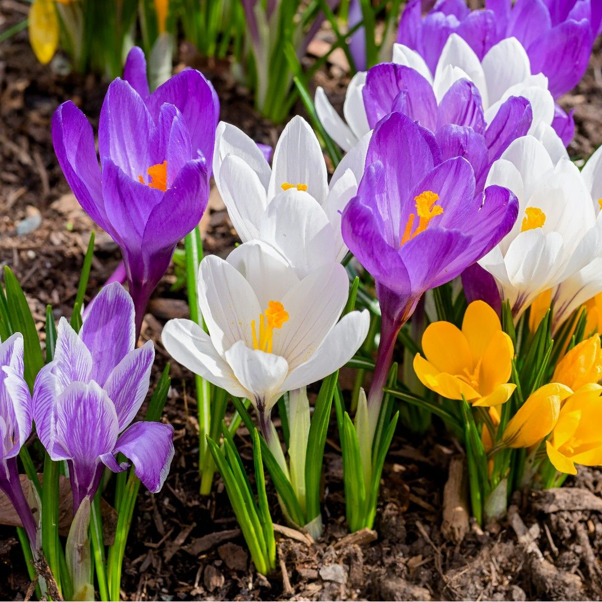 | 10cm X 10cm | Flower Time |
Own it!
Flowering mainly in late winter to early spring, crocuses offer cheer in borders, seasonal containers or planted in lawns to create colour carpets. In addition to the spring flowering cultivars, another group of crocuses flower in autumn. For the connoisseur,
some species are best grown in troughs or alpine houses.
|
| Anemone blanda | winter windflower | 希腊银莲花 | Outdoor |

|
15cm X 15cm | March, April |
Anemone blanda bears large, daisy like flowers in a range of colours including blue, purple, pink and white. It’s perfect for naturalising under trees and shrubs, where its early spring blooms attract pollinators such as bees.
我在想，要不要在今年九十月份，在我家玉兰树下种下一圈希腊银莲花呢？ |
| Muscari armeniacum | Armenian grape hyacinth | 普通风信子 | Outdoor |

|
10-50cm X 10cm | Spring |
Own it!
M. armeniacum is a strong-growing bulbous perennial to 20cm in height, with narrow, arching green leaves and erect stems bearing dense spikes of white-tipped, deep violet-blue, egg-shaped flowers 5mm in length in spring.
|
| Aubrieta Deltoidea | Rock Cress Purple | 十字花科-紫芥菜 | Outdoor |

|
10cm X 10-50cm | Spring, Summer | A slowly spreading, mat-forming, evergreen perennial to about 10cm high, with small, hairy, grey-green leaves. Pale to mid mauve-purple, four-petalled flowers are produced in short spikes from mid-spring to early summer. |
| Berberis darwinii | Darwin's barberry | 达尔文小檗（ bò） | Hedge |

|
90cm X 90cm | Spring | Native to Chile and Argentina, Berberis darwinii was discovered by Charles Darwin in1835. It’s an upright, evergreen shrub with small, spiny, dark green, leaves, yellow flowers and blue berries. |
| Ribes sanguineum | Flowering currant | 醋栗属 | Hedge |

|
2m X 2m | Spring | Flowering Currant (Ribes Sanguineum) is deciduous and its flowers appear before the leaves. The flowers are formed in showy crimson pendulous highly scented clusters often smothering the plant and are an excellent early nectar for bees. They are followed in Autumn by blue/black currant like fruits with a white bloom which are suitable for us to eat. Its tooth serated leaves have a strong scent when crushed. |
| Osmanthus × burkwoodii | Burkwood osmanthus | 桂花树属 | Hedge |

|
2.5m X 1.5m | April, May | A dense, slow-growing, large evergreen shrub of rounded habit, to 3m, with dark green, ovate leaves 2.5-5cm in length and clusters of small, highly-scented white flowers, occasionally followed by a few black fruits. |
| Helianthus annuus 'Red Sun' | Sunflower 'Red Sun' | 红日向日葵 | Outdoor |

|
1.5m X 45cm | Jul-Sep |
Own it!
Superb at the back of borders.
|
| Clivia | Natal lily | 君子兰 | Indoor |

|
50cm X 50cm | Jun - Aug |
Own it!
Natal lily, Clivia miniata, is a fantastic houseplant suitable for a range of indoor situations. It has dark green, strap-shaped leaves, and bears clusters of orange trumpet-shaped blooms with bright yellow anthers, from spring to late-summer.
|
| Crassula ovata | Jade plant | 翡翠木 | Indoor |

|
1.5-2.5m X 1-1.5m | Flower Time |
Own it!
Grow under glass in a loam-based potting compost with added extra grit. Water moderately when in growth, very sparingly when dormant. Apply a balanced liquid fertiliser 2 or 3 times in the growing season.
|
| Phalaenopsis | orchid | 蝴蝶兰 | Indoor |

|
30cm X 30cm | Flower Time |
Own it!
These orchids have been widely bred to produce many free-flowering and easy-to-grow hybrids. They grow well as houseplants, enjoying the year-round warmth and filtered light in our homes.
|
| Sansevieria trifasciata | Mother in law's tongue, snake plant | 虎尾兰 | Indoor |

|
1m X 30cm | Flower Time |
Own it!
S. trifasciata is a succulent perennial forming a clump of erect, sword-shaped deep green leaves with pale green transverse bands, with racemes of small, tubular pale green flowers in summer or autumn.
|
| Penstemons | Beard Tongue | 钓钟柳 | Outdoor |

|
0.5-1m X 0.1-0.5m | March to mid-May | These elegant easy-to-grow border plants send up spires of tubular flowers in a range of gorgeous colours. From sky blue to rich plum, deep purple to powdery pink, they flower across the summer months, and like a warm, sunny spot. |
| Erysimum | Wallflower | 糖芥属 | Outdoor | 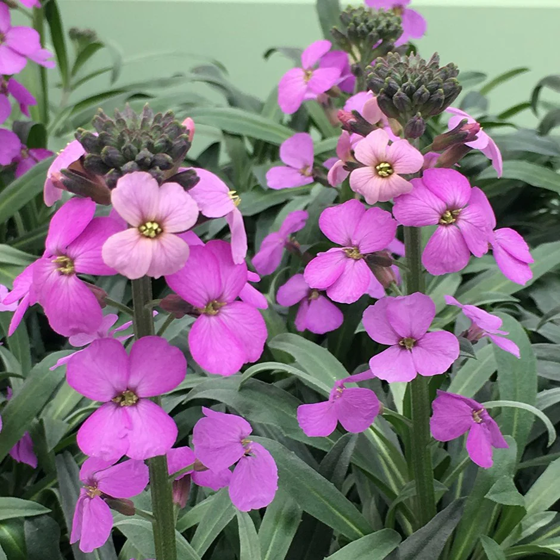 | 45cm X 50cm | March to August | 'Bowles's Mauve' is a bushy evergreen perennial to 75cm, with narrow, dark grey-green leaves and erect racemes of rich mauve flowers 2cm in width. Shortlisted for the Chelsea Plant of the Centenary for the decade 1973-1982。 |
| Galanthus nivalis | common snowdrop | 雪滴花,雪花莲 | Outdoor |

|
15cm X 10cm | Flower Time |
Own it!
G. nivalis is a perennial to 15cm, with narrow, grey-green leaves and solitary, nodding, fragrant white flowers 2.5cm in length, the inner segments marked with green at the tip.
|
| Kniphofia | Red-hot poker | 火炬花 | Outdoor |

|
100cm X 100cm | March to November |
Own it!
Kniphofia may be evergreen or herbaceous perennials, with linear or strap-shaped leaves and erect stems bearing a dense raceme of tubular, usually pendent flowers.
|
| Rosmarinus officinalis | Rosemary | 迷迭香 | Outdoor |

|
100cm X 100cm | Mar - May |
Own it!
Easy to grow aromatic, evergreen shrub. Prefers poor, well-drained soil and may be used as a formal or informal low hedge which should be trimmed after flowering.
|
| Digitalis purpurea | foxglove | 毛地黄 | Outdoor |

|
1.5m X 45cm | May - July |
Own it!
Happiest in nuetralor acid soils in mpartial shade,or in full sun if the soil is not too dry. D. purpurea is a biennial or short-lived perennial, freely self-sowing, with a rosette of softly hairy, oval leaves and tall, one-sided spires of pendant, tubular,
bright rosy-purple flowers 6cm long, spotted within, in summer.
|
| Stachys byzantina | Lambs' ears | 绵毛水苏, 羊耳石蚕 | Outdoor |

|
15cm X 60cm | Flower Time | Lambs’ ears, Stachys byzantina, is a well-known ground-covering perennial, grown for its soft, woolly foliage. Plants are particularly attractive to the solitary wool carder bee, Anthidium manicatum, which cards the fine hairs from the leaves to use as nesting material. |
| Ulex europaeus | common gorse | 荆豆 | Hedge |

|
1.5-2.5m X 1.5-2.5m | Spring, Winter | U. europaeus is a bushy evergreen shrub with very spiny much-branched stems and solitary coconut-scented bright yellow flowers 2cm in length, mainly in winter and spring, followed by slender black seed-pods. |
| Helleborus niger | Christmas rose | 黑根铁筷子 | Outdoor |

|
45cm X 45cm | Spring, Winter | H. niger is a semi-evergreen perennial to 30cm, with pedately lobed, leathery, dark green leaves and 1-3 pure white or pink-flushed white, bowl-shaped flowers up to 8cm in width. |
| Aconitum napellus | Monkshood | 欧洲乌头 | Outdoor |

|
1.2m X 50cm | June, July | A. napellus is an upright tuberous perennial to 1.5m tall, with deeply divided, dark green leaves and tall spires of violet-blue, hooded flowers in mid and late summer. |
| Pyrus communis 'Conference' | pear 'Conference' | 西洋梨 | Tree |

|
250cm X 250cm | Flower Time |
Own it!
Home-grown pears are far superior in flavour to anything you can buy in the shops. What’s more, a much greater variety of cultivars is available if you grow your own.
|
| Prunus domestica 'Victoria' | plum 'Victoria' | 欧洲李 | Tree |

|
250cm X 240cm | Flower Time |
Own it!
Named in honour of the much-loved British queen, Victoria Plum is the UK's favourite plum variety by a mile – and deservedly so!
|
| Malus domestica 'Braeburn' | apple 'Braeburn' | 苹果 | Tree |

|
2.5m X 2.5m | Flower Time |
Own it!
Braeburn’ in the most popular dessert apple in the UK. Discovered in New Zealand in 1952, it is named after the orchard where it was first grown. Malus are small to medium-sized deciduous trees with showy flowers in spring and ornamental or edible fruit
in autumn; some have good autumn foliage colour
|
| Vaccinium corymbosum | Highbush Blueberry | 蓝莓 | Hedge |

|
1.5m X 1.0m | Flower Time |
Own it!
This mid to late season variety produces good crops of deliciously sweet, deep blue berries with a lovely firm texture. The fruits are borne in clusters in late July and August and will often keep longer than many other varieties. Blueberry ‘Bluegold’
is a particularly attractive variety for its white spring flowers, golden autumn foliage and yellow stems in winter. With such good looks it will be equally at home in your shrub borders, as well as the veggie plot or allotment.
This Blueberry variety is also self fertile so you won’t need a second plant to pollinate it.
|
| Cornus | dogwood | 山茱萸 | Hedge | 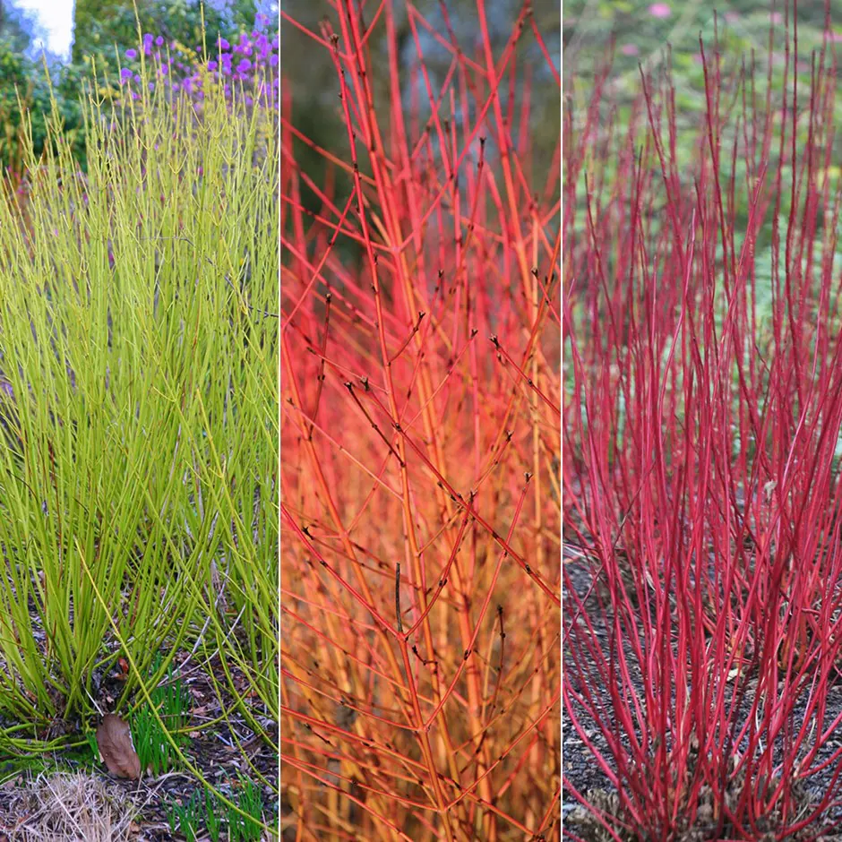 | 2-3m X 2-3m | Flower Time |
Own it!
To get the best winter stem colour, you’ll need to cut off all of the stems (coppice) annually in early spring, about 5cm (2in) above ground level. Over time the base will form a permanent low framework known as a stool.
|
| Euphorbia pulcherrima | poinsettia | 一品红，圣诞红 | Indoor |

|
0.1-0.5m X 0.1-0.5m | Flower Time | A favoured last-minute present for a forgotten aunt and sadly generally destined for the bin once the season is over. E. pulcherrima is a semi-evergreen shrub with large, bluntly toothed, ovate leaves and tiny yellow flowers with leaf-like bright red bracts, opening in winter。 |
| Hippeastrum 'Red Lion' | Amaryllis 'Red Lion' | 朱顶红 | Indoor |

|
25-90cm X 30cm | Winter to spring |
Own it!
Hippeastrum, or amaryllis, are most commonly grown as flowering houseplants, and are often given as gifts at Christmas. The bulbous plants hail from South Africa, and bear four to six large flowers on a tall, light green hollow stem.
|
| Narcissus papyraceus 'Ziva' | Narcissus ‘Paperwhite Ziva’ | 纸白水仙 | Indoor / Outdoor |

|
40cm X 10cm | Winter | Highly scented. Will flower natually in spring but can be forced into flower for Christmas. |
| Phlomis russeliana | Turkish sage | 中文名 | Outdoor |

|
0.5-1m X 0.1-0.5m | May to September | Spreads well when happy, excellent as weed suppressing ground cover. Divide plants in spring. |
| Cedrus atlantica | Atlas cedar | 北非雪松 | Tree |

|
12m X 8m | Flower Time | Glauca Group are large evergreen conifers, at first conical, later developing a broad crown, with spreading branches bearing silvery blue-green needles to 2.5cm, long, and ovoid cones to 9cm. Variable, and good blue-leaved forms should be sought. |
| Hydrangea macrophylla | Mophead hydrangea | 绣球 | Outdoor |

|
120cm X 150cm | June - October |
Own it!
One of the results of a hydrangea's ability to change colour is that identification of a particular variety can be difficult on acidic soil as the plant may change colour completely if planted somewhere else.
|
| Miscanthus sinensis | Chinese Silver Grass | 中国芒 | Outdoor |

|
2m X 1.2cm | Flower Time | Miscanthus sinensis ‘Malepartus’ is an attractive ornamental grass with fine, arching leaves with a distinctive central white stripe, which take on beautiful orange and red hues in autumn. In summer it bears spectacular red-brown, silky feathery blooms, which appear to glow in the evening light. Quick to establish, it’s perfect for a mixed ornamental border or gravel garden. |
| Cotinus coggygria | smoke tree | 黄栌，红叶树、烟树 | Tree |

|
5m X 5m | Spring -Autumn |
C. coggygria is a large, bushy, deciduous shrub to 5m, with rounded leaves turning yellow, orange and red in autumn. Large feathery inflorescences are buff at first, later greyish.
Propagate by semi-ripe cuttings in summer. Prune if necessary in winter or early spring. |
| Acer palmatum | Japanese Maple | 日本槭（qì ）树 / 鸡爪槭 / 日本红枫 | Tree |

|
4m * 8m | Flower in Spring, Foliage Spring-Autumn | A. palmatum is a variable small tree with small, deeply 5 to 7-lobed leaves often colouring well in autumn. Small red flowers in spring are followed by winged, red or green fruits |
| Lysimachia punctata | yellow loosestrife | 毛黄连花 | Outdoor |

|
60-90cm X 30-60cm | Jun - Sep | The tall stems carry spikes of cheerful, cupped, star shaped, bright yellow flowers sit amongst mid-green leaves. |
| Nigella damascena | love-in-a-mist | 黑种草 | Outdoor |

|
45cm X 25cm | Jul - Sep | N. damascena is an upright, bushy annual to 50cm, withfeathery foliage. Pale blue flowers 4cm across areborne in summer followed by decorative, inflated seed capsules |
| Polianthes tuberosa | tuberose | 晚香玉 | Outdoor |

|
60-90cm X 60-90cm | Summer | a deciduous tuberousperennial forming a rosette of narrow leaves to 40cm long, with an erect stem to 1.2m tall, bearing a loose spike of highly fragrant, double white flowers 4-6cm long in summer |
| Zantedeschia | Calla Lily | 马蹄莲 | Indoor/Outdoor |

|
50cm X 35cm | Flower Time | As with planting, there’s not too much required for the care of calla lilies other than keeping them watered and fertilized. |
| Begonia | Begonia | 秋海棠 | Outdoor | 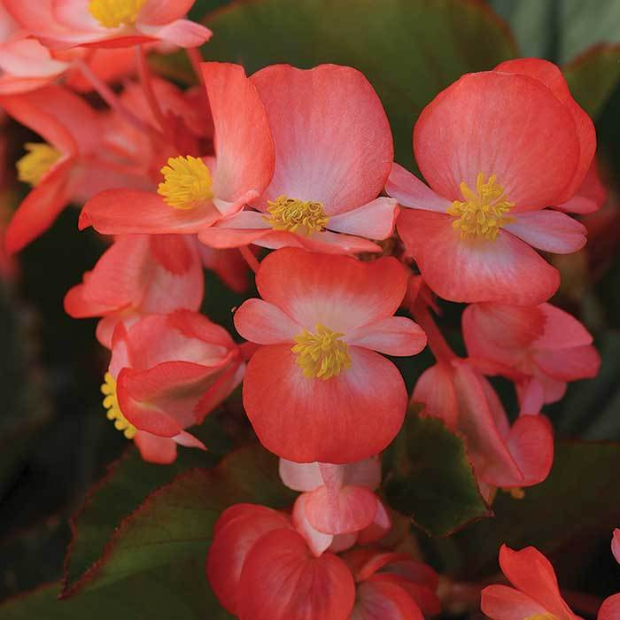 | 30cm X 30cm | Jun - Oct |
Own it!
It’s a tough, gorgeous plants that works in both sun and shade conditions.
|
| pelargoniums | Geranium | 天竺葵 | Ourdoor | 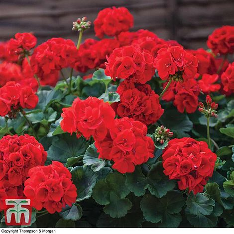 | 30cm X 20cm | Jun - Oct |
Own it!
Large, shapely scarlet flowers that retain their form, without shattering as they fade
|
| Salvia splendens | scarlet sage | 一串红 | Outdoor |

|
30-45cm X 30cm | Summer, Fall |
Own it!
S. splendens is a compact, upright perennial usually grown as an annual, with oval leaves and dense spikes of tubular scarlet flowers with large red bracts, over a long period in summer and autumn
|
| Tagetes patula | French Marigold | 法国万寿菊 | Outdoor |

|
50cm X 30cm | Flower Time |
Own it!
Grow in moderately fertile, well-drained soil in full sun. Deadhead regularly to prolong flowering. Water freely in dry spells
|
| Mimosa pudica | Sensitive plant | 含羞草 | Indoor/Outdoor |

|
10cm X 50cm - 50cm*100cm | Flower Time |
Own it!
Patio & Container Plants
|
| Hoya carnosa | Wax plant | 球兰 | Indoor |

|
45cm X 45cm | May - Sep | 球兰花（Hoya carnosa）又名蜡兰、樱兰，石南藤。球兰花为萝藦科球兰属多年生常绿藤本植物。茎肉质，长达7米，节间有气根，攀附力较强。叶对生，厚肉质，全缘，叶脉不明显，近似蜡质，丰厚肥润，给人以充实富裕之感。 |
| Taraxacum officinale agg. | Dandelion | 蒲公英 | Wild Life |

|
|||
| Pteridium aquilinum | Bracken | 蕨 | Outdoor |

|
110cm X 140cm | Flower Time | Huge, widespread, ancient. Bracken is thought to be the most common plant in the world and is found on all continents except Antarctica. In the UK, they thrive in woodland. |
| Lavandula angustifolia ‘Hidcote’ | English lavender | 薰衣草 | Outdoor |

|
60cm X 75cm | July to October | Lavandula angustifolia 'Hidcote' AGM is a favourite English variety, famed for its nectar-rich, voilet-purple flower spikes tha tare superb for drying and using to add flavour to biscuits and cakes. It has a neat and bushy habit, makes a wonderful aromatic hedge and thrives in pots on a bright and sunny patio. The flowers are also adored by bees and other pollinating insects. |
| Camellia-japonica | Camellia japonica, common camellia, Japanese rose | 山茶花 | Tree |

|
4m X 3m | Feb - Apr |
Own it!
Purchased April 2021
|
| Begonia-Marginata | Begonia Marginata | 秋海棠 | Ourdoor | 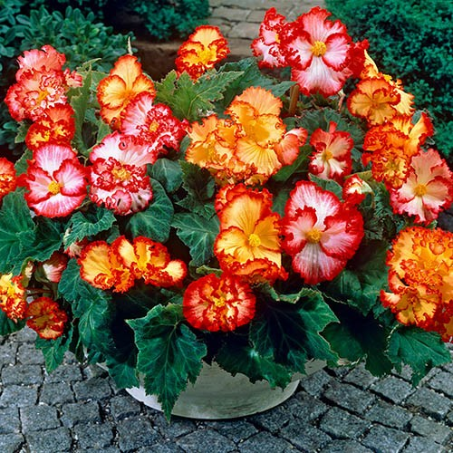 | 25cm X 30cm | June - Sep |
Own it!
Purchased April 2021.
|
| Paeonia-'Coral-Charm' | Peony 'Coral Sunset' | 芍药 | Outdoor |

|
85cm X 85cm | late Spring, Summer |
Own it!
Purchased in April 2021.
|
| Paeonia-suffruticosa-'Taiyo' | Japanese Tree Peony 'Taiyo' | 芍药树 | Tree |

|
150cm X 150cm | Flower Time |
Own it!
Purchased April 2021. Grows to 150cm in 10-20 years.
|
| Myrrhis odorata | sweet cicely | 茉莉芹 | Wild Life | 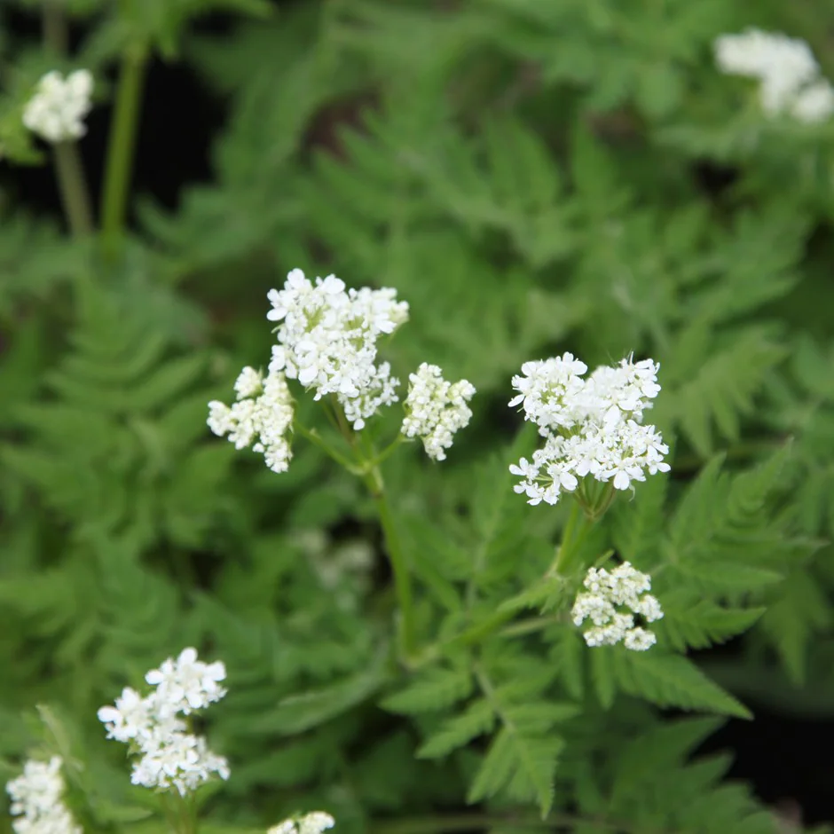 | 1.2m Height | Flower Time | Aniseed scented perennial with bright green leaves and white flowers |
| Tulipa 'Dordogne' | Tulip 'Dordogne' | 郁金香 | Outdoor |

|
60cm X 15cm | Late April to May | Single late tulips. |
| Alcea rosea 'Chaters Double Mixed' | Hollyhock | 蜀葵 | Outdoor |

|
240cm Height | Jun-Aug |
Own it!
Paeony-like double pompon blooms arrayed along the tall, elegant spires in a lovely range of colours.
|
| Phaseolus coccineus 'Enorma' | bean (runner) 'Enorma' | 荷包豆, 花豆，大红豆 | Vegetables |

|
Flower Time |
Own it!
This runner bean produces some of the longest, most beautiful pods of any British bean plant with a superb flavour to match.
|
|
| Magnolia stellata | Magnolia | 玉兰 | Tree |

|
3m X 4m | Spring |
Own it!
M. stellata is a slow-growing medium-sized deciduous shrub of broadly rounded habit. Leaves narrowly obovate. Flowers white, to 10cm in width, with up to 18 narrowly oblong, spreading white tepals, in early spring
|
| Olea europaea | Common Olive | 橄榄 | Tree |

|
Flower Time | Notes | |
| Schlumbergera | Christmas cactus | 蟹爪兰 | Indoor |

|
40cm X 80cm | Nov-Jan |
Own it!
They flower from late November to late January, they give a wonderful Christmas display or are an ideal Christmas gift.
|
| Cyclamen-hederifolium | Ivy Leaved Cyclaman | 仙客来 | Indoor, Outdoor |

|
10-50cm X 10-50cm | Flower Time |
Own it!
C. persicum is a winter or spring-flowering tuber, growing to 10-20cm in height. Heart-shaped, dark-green leaves have silver markings. Fragrant white or pink flowers with petals swept upwards have carmine mouths
|
| Delphinium | Larkspur | 大花飞燕草，高花翠雀 | Outdoor |

|
1.5-2m High | Jun-Aug, following year |
Own it!
Grow plants closely together to help support each other.Renowned for their clear colours and commanding presence, delphiniums are possibly the ultimate early summer perennial and there are plenty of varieties to choose from
|
| Salvia | Sage | 鼠尾草 | Herb | 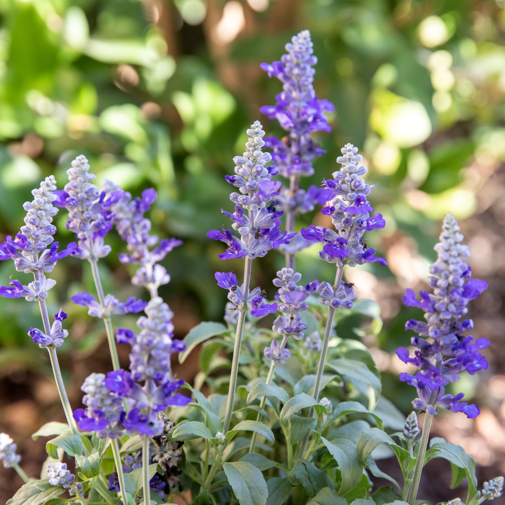 | 45-90cm X 30-90cm | Flower Time |
Own it!
|
| Tradescantia x andersoniana-'Isis' | Spider Wort | 紫露草/紫鸭跖草 | Outdoor |

|
30-45cm X 38-45cm | Flower Time |
Own it!
Grow in fertile, moist soil in full sun or partial shade. May need staking
|
| Echium webbii | Bugloss | 篮蓟属 | Outdoor |

|
1.5m X 75cm | Flower Time | Notes |
| x Graptoveria ‘Titubans’ | Porcelain Plant | 白牡丹 | Indoor |

|
Flower Time |
Own it!
An easy to grow plant. Looks great in a terrarium or other succulent planter.
|
|
| Silene latifolia | White Campion | 白花蝇子草 | Wild Life | 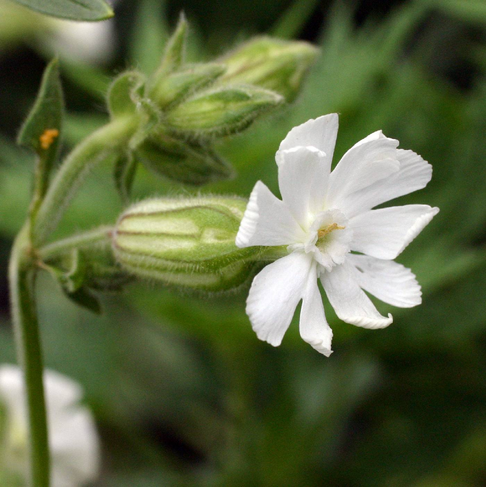 | up to 1m High | May to October | White campion can be found in hedgerows. |
| Lilium 'Purple Prince' | Giant Lily Purple Prince | 百合 | Outdoor |

|
2m X 40cm | Flower Time |
Own it!
'Purple Prince' is a vigorous, erect, bulbous perennial with sturdy stems bearing whorled, elliptic, glossy, dark green leaves and, in summer, large, fragrant, bowl-shaped, purple to dark magenta flowers with yellow throats.
|
| Gladiolus murielae | Abyssinian Sword-Lily, Peacock lily, Peacock Orchid | 唐菖蒲 | Outdoor |

|
1m X 40cm | Aug-Oct | The Victorians loved Acidanthera murielae (a cousin of the gladiolus) for cut flowers and it's easy to see why. It has a wonderful scent and lasts brilliantly in the vase. |
| Anemone coronaria De Caen Group | garden anemone | 欧洲银莲花 | Outdoor |

|
25-60cm X 15-22cm | Spring |
Own it!
De Caen Group are tuberous perennials with finely-dissected, palmate leaves and red, blue-violet or white flowers which appear from March to April
|
| Hypochaeris-radicata | Cat's ear, Australian cape weed, California dandelion | 猫儿菊 | Wild Life | 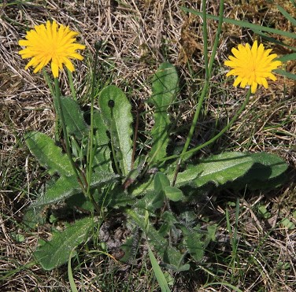 | 30cm X 30cm | May-Sep | A perennial that makes a good meadow component. Rich yellow flowers and dandelion-like seed heads. |
| Leucanthemum superbum 'Crazy Daisy' | Shasta Daisies | 大滨菊 | Outdoor |

|
60cm X 45cm | Jun-Sep | The frilly blooms of this shasta daisy are a magnet for pollinators. |
| Coreopsis grandiflora 'Golden Joy' | tickseed 'Early Sunrise' | 大花金鸡菊, 大花波斯菊 | Outdoor |

|
45cm X 40cm | Jun-Sep | A compact coreopsis that is ideal for the front of borders. |
| Lavandula-angustifolia-'Munstead' | Lavender 'Munstead' | 薰衣草 | Herb |

|
45cm X 60cm | Flower Time |
Own it!
'Munstead' is a compact evergreen shrub, to 45cm tall, with narrow, grey-green foliage and spikes of small, highly-fragrant, blue-purple flowers in mid to late summer
|
| Cornus alba L. | red-barked dogwood | 山茱萸 | Hedge |

|
250cm X 250cm | Flower Time |
Own it!
Propagate by hardwood cuttings
|
| Veronica persica | Common Field Speedwell | 阿拉伯婆婆纳 | Outdoor |

|
Flower Time |
Own it!
Common Field-speedwell can be found in flower every month of the year but is at its peak between June to September.
|
|
| Euphorbia amygdaloides 'robbiae' | Wood Spurge | 大戟 | Outdoor |

|
70cm X 1m | Flower Time | Always wear gloves when working with euphorbias. The milky sap is a skin irritant. |
| Euphorbia polychroma / Euphorbia epithymoides | Cushion spurge, many coloured spurge | 大戟 | Outdoor |

|
60cm X 40cm | Flower Time | Notes |
| Pelargonium 'Summer Twist' | Pelargonium | 天竺葵 | Outdoor |

|
40cm X 40cm | Flower Time | A brand-new mix of pelargonium geraniums with clusters of flowers in a striking combination of red and white. The delightfully named ’Summer Twist’ will give you a succession of unique blooms from early summer until autumn, making this an essential addition to your garden borders, pots, baskets and balcony displays. |
| Eryngium x zabelii ‘Big Blue’ | Sea Holly | 海滨刺芹 | Outdoor |

|
90cm X 60cm | Flower Time | Eryngium zabelii ‘Big Blue’ is a versatile perennial that produces large spiky steely-blue flowers that rise above the spiny foliage in summer. Perfect for sunny boarders or containers. |
| Nemesia | Nemesia | 中文名 | Outdoor |

|
Flower Time |
Own it!
s
|
|
| Sarracenia | Pitcher Plants | 瓶子草 | Outdoor |

|
Flower Time | Fearsomely efficient flycatchers and easy for beginners to grow | |
| Viola-'Rebecca' | Viola 'Rebecca' | 堇菜属 | Outdoor |

|
15cm X 20cm | Flower Time | The scented flowers, held on long stems, are pale cream with slightly frilly edges flecked with violet. |
| Viola-'Nora' | Viola 'Nora' | 堇菜属 | Outdoor |

|
15cm X 20cm | Flower Time | An unusual bicolour, with rosy purple upper petals, yellow lower petals and a lovely scent. |
| Viola-‘Etain’ | Common Name | 堇菜属 | Outdoor |

|
15cm X 20cm | Flower Time | A delightful ‘old-fashioned’ viola with neat rounded petals of a soft creamy-yellow, outlined in soft blue. Very floriferous and highly scented. |
| Viola cornuta ‘Victoria’s Blush’ | Viola ‘Victoria’s Blush’ | 堇菜属 | Outdoor |

|
15cm X 20cm | Flower Time | This vigorous variety has jaunty, rosy lilac flowers and loves a sunny spot. |
| Akebia quinata | Chocolate vine | 五叶木通 | Outdoor |

|
10m X 2cm | Flower Time | Can get quite carried away so may need cutting back after flowering. Propagate by layering or summer cuttings. |
| Digitalis x hybrida 'Pink Panther' | Foxglove | 毛地黄 | Outdoor |

|
70cm X 40cm | Flower Time |
Own it!
Hardy, reliable & will flower year after year.
|
| Agapanthus africanus 'Twister' | African Lily | 百子莲 | Outdoor |

|
60cm X 50cm | Flower Time | Blue and white trumpet-shaped blooms form large, globe-like clusters which are held on strong stems above strap-shaped foliage from July to September. Perfect for planting in pots and excellent as cut flowers. |
| Epimedium × perralchicum ‘Frohnleiten’ | Common Name | 淫羊藿属 | Outdoor |

|
30cm X 60cm | Flower Time | Shelter from both cold winds and direct sunshine. Divide plants in autumn. No need to cut back unless leaves looking very tired. |
| Erythronium-californicum | Fawn lily | 猪牙花 | Outdoor |

|
30cm X 30cm | Flower Time | Plant bulbs in autumn. Easy to grow but don't let the soil dry out. Divide clumps after flowering. |
| Hosta ‘Barbara Ann’ | Hosta | 玉簪属 | Outdoor |

|
60cm X 90cm | Flower Time |
Own it!
Large leaved variety with a strong white edge. Watch out for slugs and snails - a slug hunt at dusk with a torch and a bucket can be very rewarding.
|
| Lamprocapnos spectabilis | Bleeding heart, lyre flower, lady-in-a-bath | 中文名 | Outdoor |

|
60cm X 60cm | Flower Time | Best inpartial shade. Divide in spring orpropagate from root cuttings in winter. |
| Magnolia × brooklynensis 'Yellow Bird' | Yellow Lily Trees | 黄玉兰 | Tree |

|
5m X 3m | Apr - May |
Own it!
'Yellow Bird' _ 'Yellow Bird' is a large, vigorous, conical, deciduous tree with ovate to elliptic, dark green leaves and goblet-shaped, yellow flowers that bloom as the leaves emerge in spring.
|
| Daucus carota 'Chantenay' | Carrot | 胡萝卜 | Vegetables |

|
Flower Time | Notes | |
| Cosmos bipinnatus 'Purity' | Cosmos | 波斯菊 | Outdoor |

|
Flower Time |
Own it!
|
|
| Tulipa 'Ballerina' | Tulip 'Ballerina' | 郁金香 | Outdoor |

|
40cm X 10cm | Spring | Looks particularly good with Tulipa 'Spring Green' and Tulipa 'Queen of Night' |
| Tulipa ‘Queen Of Night’ | Tulip ‘Queen Of Night’ | 郁金香 | Outdoor |

|
Flower Time | Notes | |
| Tulipa 'Spring Green' | Tulip 'Spring Green' | 郁金香 | Outdoor |

|
Notes | ||
| Prunus serrulata 'Kanzan' | Cherry 'Kanzan' | 山樱花 | Outdoor |

|
10m X 10cm | Flower Time | This is a great tree for a medium sized garden: the followers are followed by fresh leaves which are a bronzy colour when young, and turn well in the autumn. Prune in summer if you need to maintain shape. Plant with lots of well rotted compost. |
| Anemone blanda 'Charmer' | winter windflower | 银莲花 | Outdoor |

|
10cm X 20cm | Flower Time |
Own it!
Plant tubers in autumn afater soaking them overnight. Good in pots or naturalised under trees and shrubs.
|
| Primula 'Blue Lace Mary' | Primula, Primrose | 报春花 | Outdoor |

|
25cm X 20cm | Flower Time |
Own it!
Beautiful detailing on petals so best in a pot so more easily seen. Propagate by division in spring.
|
| Tulipa saxatilis 'Lilac Wonder' | Common Name | 郁金香 | Outdoor |

|
25cm X 10cm | Flower Time |
Own it!
Delightful little species tulip - more reliably perennial than larger varieties. Plant bulbs late autumn.
|
| Forsythia × intermedia 'Lynwood Variety' | Forsythia | 连翘 | Hedge |

|
2.5m X 2.5cm | Flower Time |
Own it!
They prefers to be freestyle, not squeezed into small front gardens close to path.
|
| Viola x wittrockiana ‘Matrix Blue Frost’ | Pansy Matrix™ Blue Frost | 大花三色堇, 紫罗兰 | Outdoor |

|
10cm X 10cm | Flower Time |
Own it!
There are so many different varieties of winter pansy - and all of them perfect for an early spring container.
|
| Narcissus-‘Tête-à-tête’ | daffodil 'Tête-à-tête' | 黄水仙 | Outdoor |

|
20cm X 5cm | Flower Time |
Own it!
Reliable and popular dward variety. Excellent in pots, window boxes or en masse in borders.
|
| Helleborus-argutifolius-'Silver-Lace' | Hellebore | 齿叶铁筷子 | Outdoor |

|
60cm X 40cm | Flower Time | Evergreen perennial. Cut off old leaves as flowers emerge. Propagate from seed when ripe. |
| Bellis perennis ‘Tasso White’ | Daisy | 雏菊 | Outdoor |

|
10cm X 15cm | Flower Time | Great plant for winter bedding. Deadhead regularly to prolong flowering. Not great in very cold gardens. |
| Berberis thunbergii | Japaneses barberry | 红叶小檗 | Hedge | 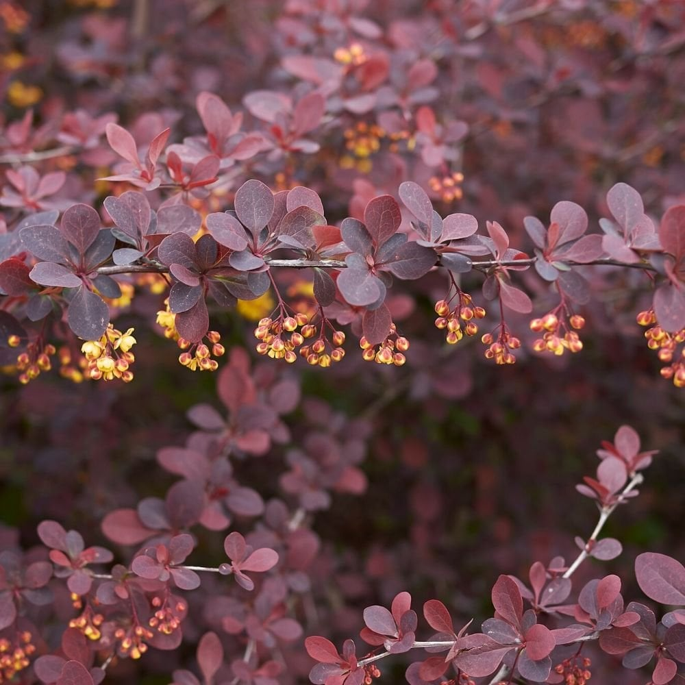 | H X S | Flower Time | Notes |
| Begonia-Double-White | Begonia | 秋海棠 | Outdoor | 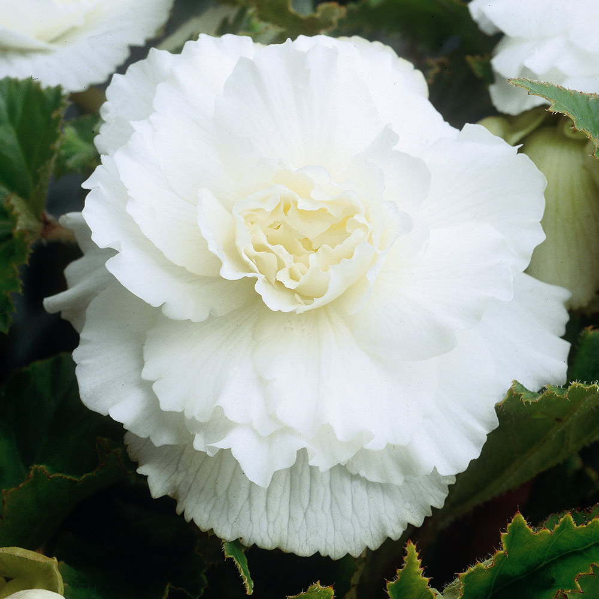 | H X S | Flower Time |
Own it!
2021, big pot
|
| Freesia | Freesia single White | 小苍兰属 | Outdoor | 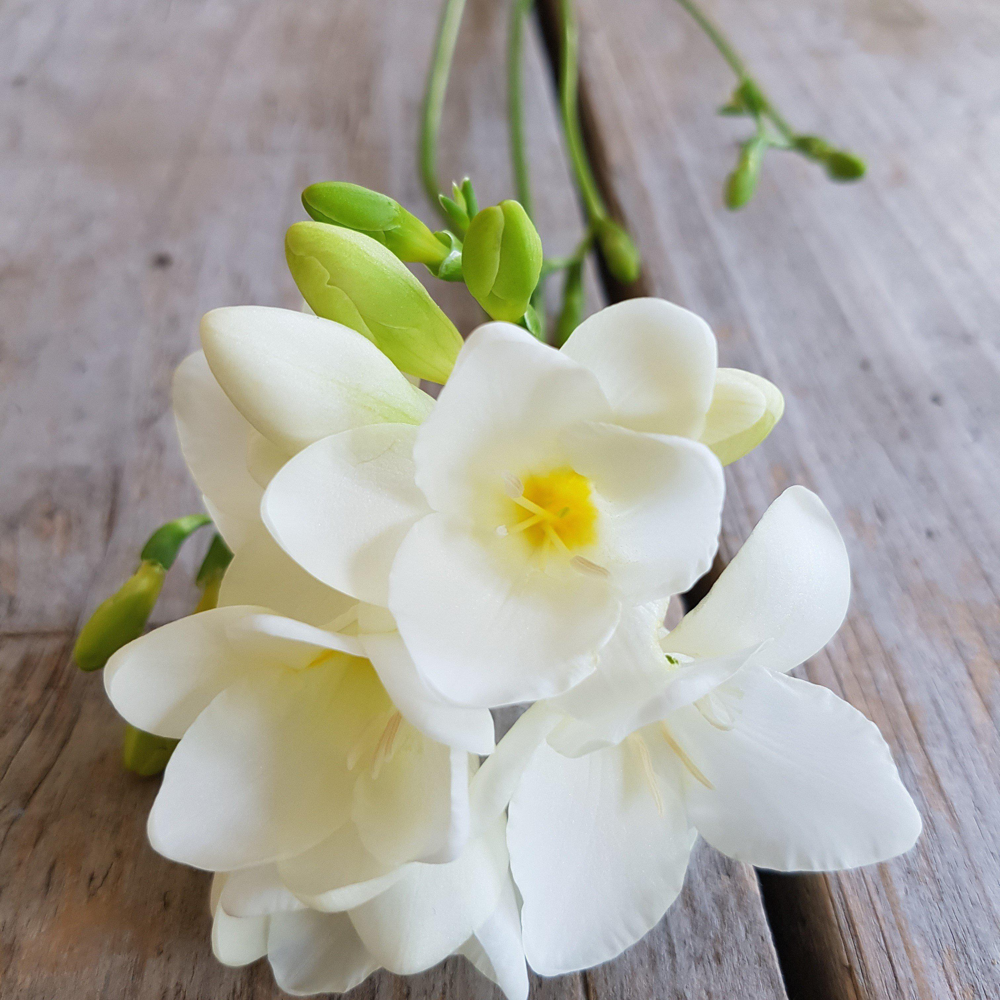 | 45cm X 10cm | June, July, August |
Own it!
2021, big pot. Freesias’ trumpet-shaped flowers open on just one side of their slender, arching stems, with the blooms always facing upward for better viewing. Each stem may bear as many as 12 flowers. Numerous hybrids are available in a rainbow of colors
including white, yellow, orange, scarlet, pink, royal blue, lavender, and various bicolors. You can also choose from single or fuller, double-petaled blooms.
|
| Triteleia laxa 'Queen Fabiola' | Grassnut, triplet lily, Starflower, Wild Hyacinth | 中文名 | Outdoor | 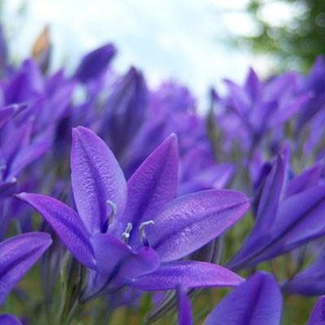 | H X S | Flower Time |
Own it!
2021, big pot
|
| Dahlia 'Lavender Perfection' | Dahlia 'Lavender Perfection' | 大丽花， 大丽菊 | Outdoor |

|
H X S | Flower Time |
Own it!
2021, big pot
|
| Dahlia hortensis | Dahlia Mignon | 天竺牡丹， 大丽花 | Outdoor | 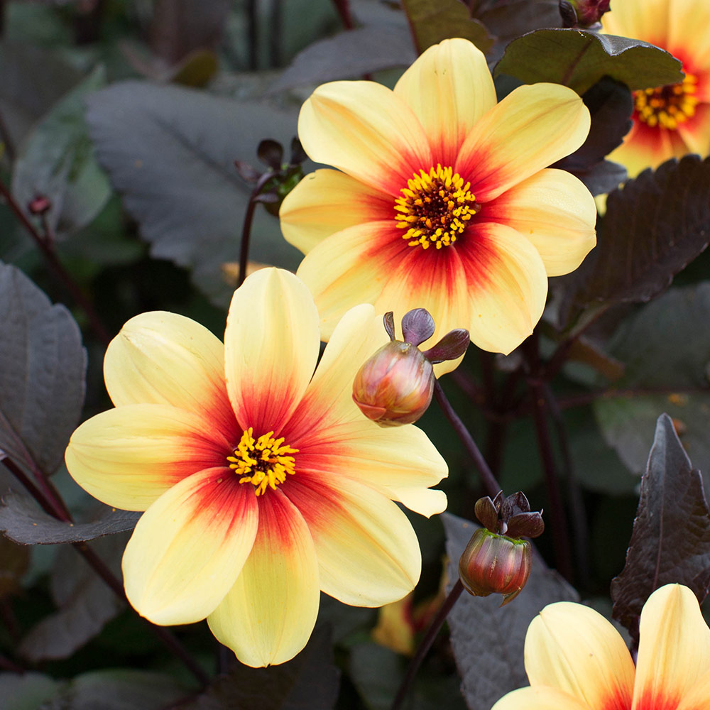 | H X S | Flower Time |
Own it!
|
| Agapanthus | African lily | 百子莲属 | Outdoor | 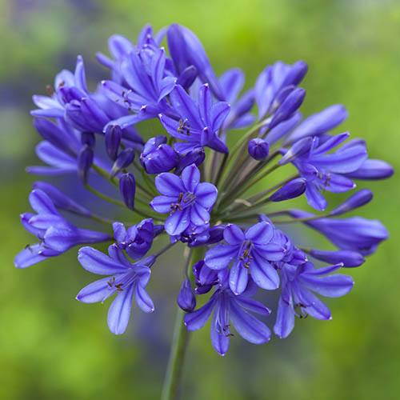 | H X S | Flower Time | Notes |
| Jasminum | Jasmine | 茉莉 | Outdoor | 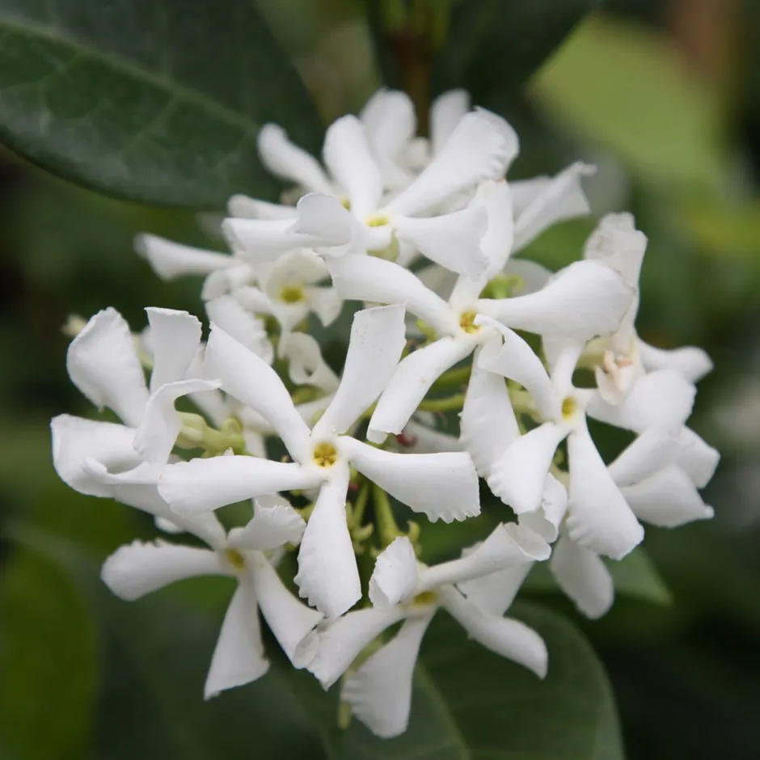 | H X S | Flower Time |
Own it!
|
| Echinacea purpurea | cone flower, Rudbeckia purpurea | 紫锥花 | Outdoor | 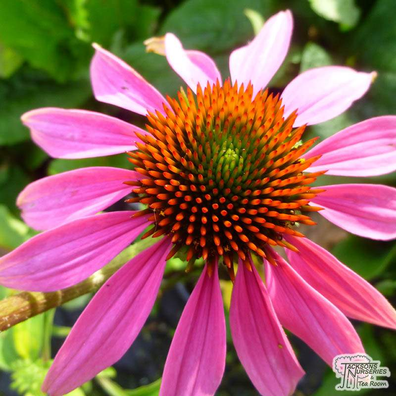 | 120cm X 45cm | Jul-Sep |
Own it!
E. purpurea is an upright perennial with coarsely hairy, ovate or lance-shaped leaves and solitary flower-heads to 12cm across with slightly reflexed, light purple rays and brown central disk.
|
| Forsythia | Forsythia | 连翘 | Hedge | 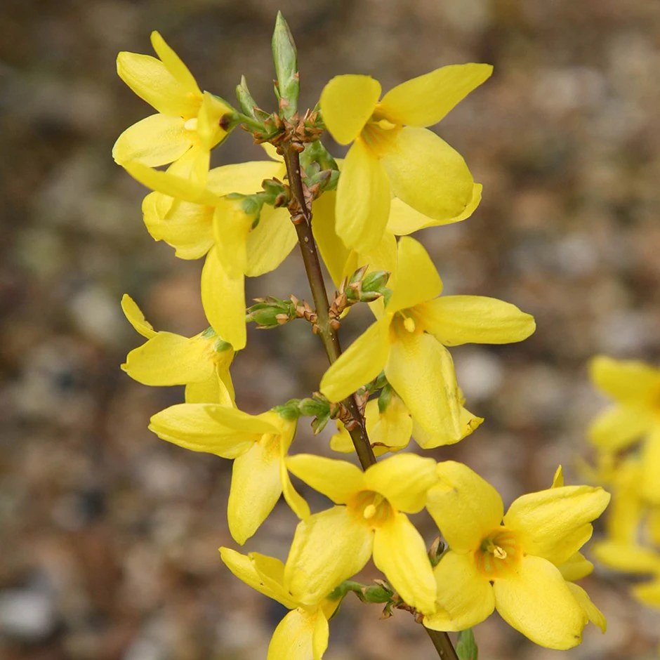 | H X S | Flower Time |
Own it!
|
| Lupins | Lupin | 鲁冰花，羽扇豆 | Outdoor |

|
H X S | May-July |
Own it!
|